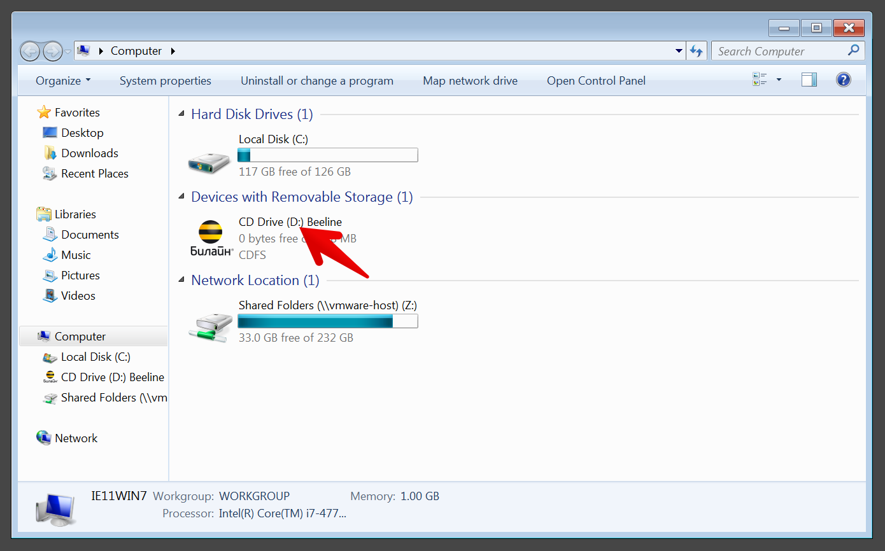
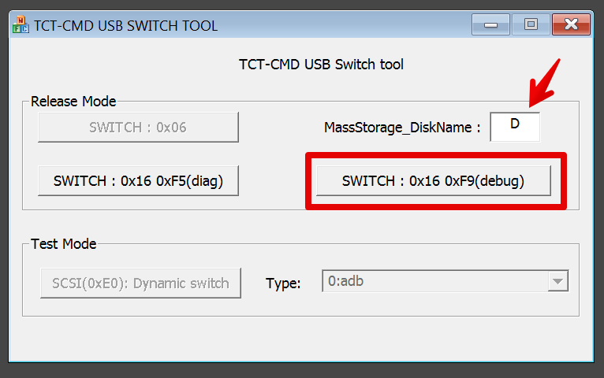
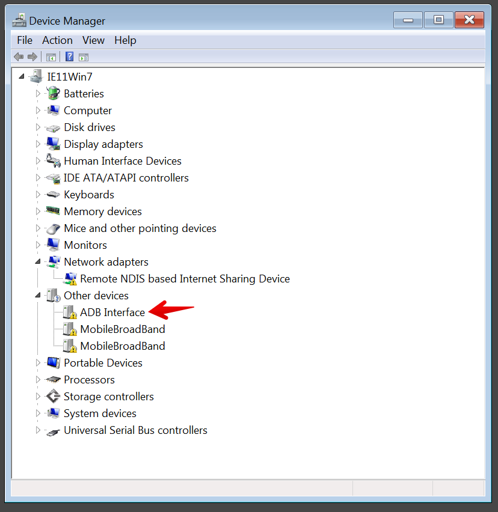
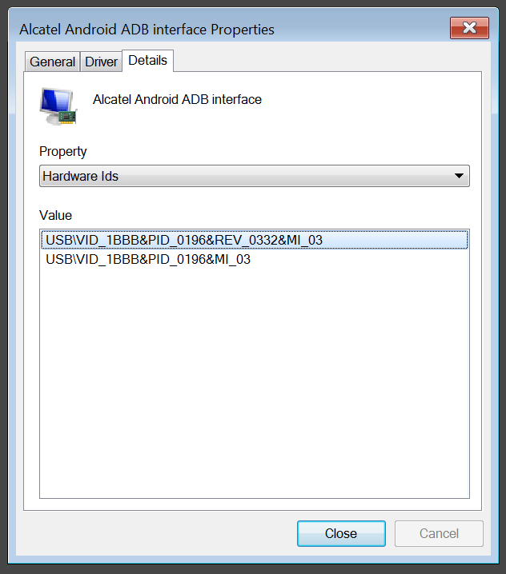
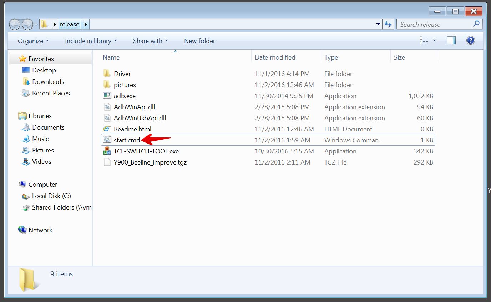
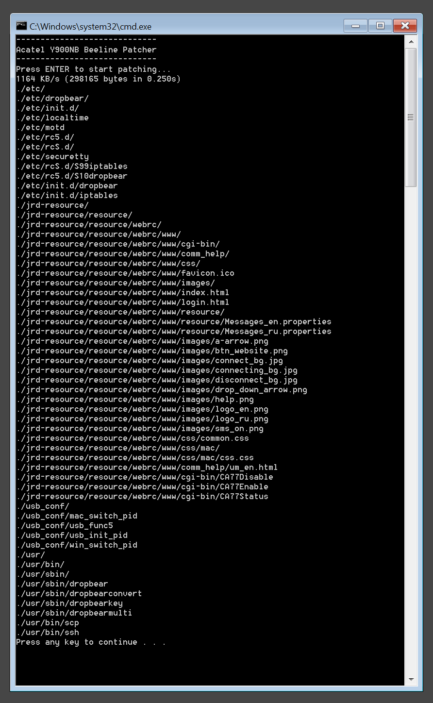

1. Загрузите архив с патчем отсюда https://github.com/zhovner/Y900-Beeline-improve/releases/
И распакуйте его в отдельную папку. Не запускайте файлы из архива без распаковки.
2. Подключите Alcatel Y900 к компьютеру. Роутер должен быть включен в момент подключения.
Дождитесь появления виртуального CD-ROM с софтом Beeline. Не устанавливайте ничего с этого диска.
Запомните букву виртуального диска.

3. Запустите программу TCL-SWITCH-TOOL.exe из архива с патчем и введите букву диска CD-ROM Beeline.
И нажмите кнопку SWITCH : 0x16 0xF9(degug)
Роутер переключится в диагностический режим и появится три новых устройства.

Одно из них это ADB интерфейс через который будет происходить заливка патча.
Если windows не нашел драйвера для ADB интерфейса, установите их из папки Drivers в архиве с патчем.

3. Убедитесь что ADB интерфейс установлен корректно. Он должен иметь такие параметры в диспетчере устройств

4. Запустите start.cmd и нажмите Enter для начала прошивки.


5. По окончании распаковки патча перезагрузите роутер кнопкой питания.